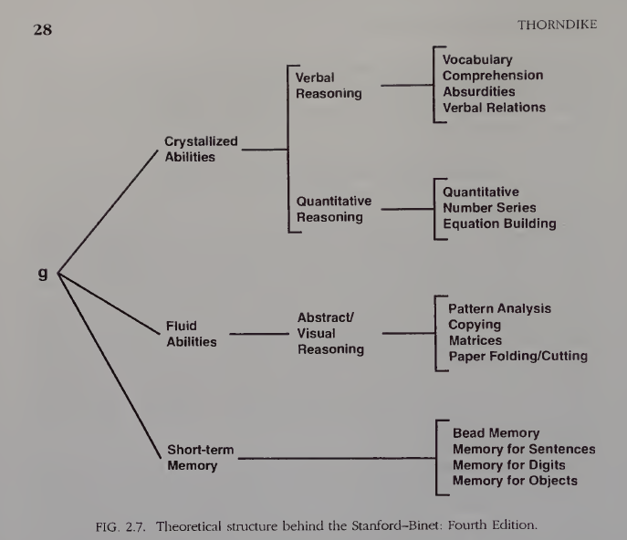

Intelligence Tests
Cognitive Test Development
2026-09-23
Agenda
- Definition of intelligence tests
- A brief history of intelligence theory
- History worth knowing
- Cattell–Horn–Carroll (CHC) theory
- CHC in Indonesia
- Two other theories: triarchic and multiple intelligences
- Types of intelligence tests
- Activity: identifying intelligence tests in a research article
Definition of intelligence tests
The most frequently cited definition
Intelligence is the aggregate or global capacity of the individual to act purposefully, to think rationally and to deal effectively with his environment.
— Wechsler (1958, p. 7)
Loosely translated: intelligence is a person’s global capacity to act with purpose, think rationally, and interact effectively with their environment.
Note
This definition emphasizes three aspects at once: goal-directed behavior, reasoning, and the ability to adapt to one’s environment.
A brief history of intelligence theory
Single factor vs. many factors
- Spearman (1904) found that scores on various ability tests tended to correlate positively with one another, and concluded there was a single general factor underlying them, later called g (general intelligence).
- Thurstone (1938) challenged this single-factor idea. Through factor analysis of dozens of tests, he proposed seven relatively independent primary mental abilities, such as verbal, numerical, and spatial ability.
- Cattell (1963) used the term fluid intelligence (Gf) for the capacity to reason in novel situations, and crystallized intelligence (Gc) for knowledge already acquired through learning.
The early development of CHC theory
- Carroll (1993) reanalyzed more than 460 cognitive ability datasets and proposed a three-stratum model: a general factor (g) at the top, a number of broad factors at the second stratum, and dozens of narrow factors at the third stratum.
- The Cattell–Horn model (Gf-Gc) and Carroll’s three-stratum model were later combined into the Cattell–Horn–Carroll (CHC) theory, now the theoretical framework most widely used in contemporary intelligence tests.
Stanford-Binet and CHC

History worth knowing
Past misuses of intelligence testing
- In the early 20th century, intelligence test scores were once used as grounds for policies of forced sterilization of people with intellectual disabilities in the United States, including the Buck v. Bell (1927) case upheld by the US Supreme Court.
- Several early figures in the development of intelligence tests were also involved in the eugenics movement, which aimed to “improve” the human population based on attributes considered heritable.
Connection to Session 1
This history is one of the reasons why the use of psychological tests in Indonesia is restricted by the Indonesian Psychological Code of Ethics (HIMPSI, 2010), which we already discussed in Session 1.
Cattell–Horn–Carroll (CHC) Theory
A layered structure
CHC organizes cognitive abilities into four levels:
- Specific abilities — tied to a single task or particular test; the only level that can be measured directly. Its role is to serve as an indicator of narrow abilities.
- Narrow abilities — a set of specific abilities that correlate highly with one another.
- Broad abilities — a set of narrow abilities that correlate more highly with each other than with other broad abilities, coded with a leading letter G.
- General ability (g) — the single factor at the top of the structure.
The structure of CHC

Some broad abilities in CHC (1)

CHC underlies several intelligence tests (1)
| Test | Broad abilities measured | Note |
|---|---|---|
| Woodcock-Johnson IV (WJ IV; Schrank et al., 2014) | 7 | Explicitly designed as an operationalization of CHC; served as the main reference for developing the CHC taxonomy itself |
| Wechsler (WISC-V, WAIS-IV; Wechsler, 2014) | 5 | Index scores aligned with five CHC broad abilities (Gf, Gc, Gv, Gwm, Gs) |
| Kaufman Assessment Battery for Children–II (KABC-II; Kaufman & Kaufman, 2004) | 5 | Offers two interpretive models the examiner can choose from: CHC or the Luria model |
CHC underlies several intelligence tests (2)
| Test | Broad abilities measured | Note |
|---|---|---|
| Differential Ability Scales–II (DAS-II; Elliott, 2007) | 5 | Aligned with CHC since its second edition |
| Stanford-Binet–5 (SB5; Roid, 2003) | 5 | Its five factors are mapped directly onto the five CHC broad abilities |
Note
The alignment-with-CHC claims on these two slides come from each test publisher’s own manual/technical report. The next two slides show that these claims do not always hold up when tested independently.
Empirical evidence for CHC theory 1️⃣: what is supported
- The structure of CHC broad abilities is built from factor analyses of hundreds of psychometric datasets, including Carroll’s (1993) reanalysis of more than 460 datasets, and this clustering has been widely replicated across studies.
- This is why CHC is considered to offer the strongest factor-analytic evidence base of any theory of cognitive ability.
- Network psychometrics analysis of the Woodcock–Johnson test (McGrew et al., 2023) also supports the existence of CHC’s main broad abilities as statistically distinguishable clusters.
- Across studies, the general factor (g) remains the single strongest predictor of academic achievement, far exceeding the contribution of any broad or narrow ability score.
Empirical evidence for CHC theory 2️⃣: what has not yet reached consensus
- The status of g itself is still debated even among the very figures whose names are attached to CHC.
- Horn regarded g as a statistical artifact and never included it in the Gf-Gc model.
- Carroll, meanwhile, did include it, but as a bifactor model, not the neat, tiered hierarchy commonly depicted in textbooks (Canivez & Youngstrom, 2019).
- Independent analyses (outside the test publishers) of major tests that claim alignment with CHC (WJ III, WJ IV, WISC-V) have repeatedly failed to replicate the number and grouping of broad abilities claimed in the test manuals.
- There is a gap between the theoretical model and the score structure the instrument actually produces (McGill & Dombrowski, 2019).
Empirical evidence for CHC theory 2️⃣: what has not yet reached consensus
- Evidence for its predictive validity is lopsided: a meta-analysis of the relationship between CHC and academic achievement found that g explains ~54% of the variance in academic achievement — far more than any broad ability.
- Each broad ability, on average, explains under 10% (none exceeding 20%), and most of that is itself an artifact of g variance rather than variance unique to that broad ability (Zaboski, Kranzler, & Gage, 2018)
- Clinical applications built on narrow and broad abilities, such as cross-battery assessment (XBA) for diagnosing specific learning difficulties, have sparked sharp debate.
- Proponents report high classification accuracy, while critics question its predictive validity for positive cases (Kranzler et al., 2016).
The status of CHC theory
- CHC is most strongly supported as a general taxonomy derived from factor analyses of large collections of datasets.
- However, the claim that any one particular test (e.g., WISC-V, WJ IV) truly measures separate broad and narrow abilities exactly as the model specifies — and the clinical value of those scores for individual decisions — rests on much weaker evidence.
- Even the status of g as a single causal factor is still debated among CHC’s own developers.
- Alternative theories such as Process Overlap Theory (Kovacs & Conway, 2016), which explain the emergence of g from overlapping cognitive processes rather than a single causal factor, show that CHC’s hierarchical structure has not become a settled consensus in the field.
Hierarchical model vs. bifactor model

CHC in Indonesia
An example of application in Indonesia
- Since 2013, Yayasan Dharma Bermakna has developed the AJT Cognitive Assessment Test (AJT-CAT) — an individually administered, CHC-based cognitive test battery normed on more than 4,000 school-age children and adolescents in Indonesia.
- AJT-CAT consists of 27 tests designed to measure 21 narrow abilities, grouped into eight CHC broad abilities (Gf, Gc, Gv, Gwm, Ga, Gs, Gl, Gr).
Two other theories
Triarchic theory and multiple intelligences
- Triarchic theory (Sternberg, 2018) — divides intelligence into three parts: analytical ability, creative ability, and practical ability. It emphasizes that success is not determined solely by the abilities typically measured by written tests.
- Multiple intelligences theory (Chen & Gardner, 2018) — proposes a number of relatively independent “intelligences” (e.g., linguistic, logical-mathematical, musical, kinesthetic), and emphasizes that an individual can excel in one domain without excelling in others.
Note
Both theories have strongly influenced discussions in education, but not as broadly as CHC, and neither has been operationalized into widely used, standardized intelligence tests.
The debate over multiple intelligences
Unlike CHC, which was built from factor analysis of test scores, Gardner’s (1983, 1999) eight “intelligences” were formulated mainly from clinical observation, case studies, and conceptual criteria.
- Note that the original theory (1983) proposed seven intelligences; naturalistic intelligence was added later, bringing the total to eight (Gardner, 1999).
When tested psychometrically, Visser, Ashton, and Vernon (2006) found that measures of the eight “intelligences” still correlated with one another and were largely explained by the general factor (g), rather than emerging as independent abilities.
Other critiques point out that some “intelligences” (e.g., musical or kinesthetic) sit closer to the notion of talent or skill than to the concept of intelligence in the psychometric tradition.
Types of intelligence tests
Some widely used instruments
| Instrument | Age range/population | Note |
|---|---|---|
| Stanford-Binet | Children through adults | One of the first individual intelligence tests |
| Wechsler (WPPSI, WISC, WAIS) | Preschool through adults | Consists of several scales matched to age groups |
| Progressive Matrices (CPM, SPM, APM) | Children through adults | Non-verbal, based on pictorial patterns |
| CFIT (Culture Fair Intelligence Test) | Children through adults | Designed to minimize the influence of language and culture |
| TIKI (Tes Inteligensi Kolektif Indonesia) | Elementary school through adults | Developed with Indonesian norms |
Activity: identifying intelligence tests in a research article
Imagine a journal abstract states:
“…participants completed Raven’s Standard Progressive Matrices as a covariate, to control for general reasoning ability before analyzing the main effect of the intervention…”
- Is this instrument an intelligence test, an aptitude test, or an achievement test? Compare it with the definitions from Session 1 and Session 5.
- Which CHC ability is most relevant to Progressive Matrices, based on today’s broad abilities table?
Progressive Matrices is an intelligence test — designed to measure the general capacity to solve problems in novel situations. The most relevant CHC ability is Gf (fluid reasoning).
Summary
- Wechsler (1958) defined intelligence as the global capacity to act with purpose, think rationally, and interact effectively with one’s environment.
- Intelligence theory evolved from a single-factor model (Spearman) to a multi-factor model (Thurstone), and then to a tiered model combining both (CHC).
- CHC organizes cognitive abilities into four levels — specific, narrow, broad, and general — and serves as the theoretical framework for your final project.
- CHC-based test development exists in Indonesia, such as AJT-CAT.
- Triarchic theory (Sternberg) and multiple intelligences (Gardner) are two alternative theories more influential in education than in standardized clinical testing; psychometric support for multiple intelligences in particular remains contested.
- The history of intelligence-test misuse is one of the reasons behind the restrictions on psychological test use under the Indonesian Psychological Code of Ethics.
For Session 7
Next: writing achievement and aptitude test items
Session 7 returns to the practical skill of item writing, applying the distinction between achievement tests (Session 4) and aptitude tests (Session 5) already covered.
Thank you!😊
Any questions?
These slides were prepared using and Quarto with a template from UNAIR Theme.
References
Anastasi, A., & Urbina, S. (1997). Psychological testing (7th ed.). Prentice Hall.
Azwar, S. (2019). Konstruksi tes: Kemampuan kognitif. Pustaka Pelajar.
Carroll, J. B. (1993). Human cognitive abilities: A survey of factor-analytic studies. Cambridge University Press.
Cattell, R. B. (1963). Theory of fluid and crystallized intelligence: A critical experiment. Journal of Educational Psychology, 54(1), 1–22.
Chen, J.-Q., & Gardner, H. (2018). Assessment from the perspective of multiple-intelligences theory. In D. P. Flanagan & E. M. McDonough (Eds.), Contemporary intellectual assessment: Theories, tests, and issues (4th ed., pp. 164–173). Guilford Press.
Gardner, H. (1983). Frames of mind: The theory of multiple intelligences. Basic Books.
Gardner, H. (1999). Intelligence reframed: Multiple intelligences for the 21st century. Basic Books.
Himpunan Psikologi Indonesia (HIMPSI). (2010). Kode etik psikologi Indonesia.
McCallum, R. S. (Ed.). (2018). Handbook of nonverbal assessment (2nd ed.). Springer.
Schneider, W. J., & McGrew, K. S. (2018). The Cattell–Horn–Carroll theory of cognitive abilities. In D. P. Flanagan & E. M. McDonough (Eds.), Contemporary intellectual assessment: Theories, tests, and issues (4th ed., pp. 73–163). Guilford Press.
Spearman, C. (1904). “General intelligence,” objectively determined and measured. American Journal of Psychology, 15(2), 201–292.
Sternberg, R. J. (2018). The triarchic theory of successful intelligence. In D. P. Flanagan & E. M. McDonough (Eds.), Contemporary intellectual assessment: Theories, tests, and issues (4th ed., pp. 174–194). Guilford Press.
Thorndike, R. (1998). IRT and Intelligence Testing. In S. E. Embretson & S. L. Hershberger (Eds.), The New Rules of Measurement: What Every Psychologist and Educator Should Know (pp. 17-36). Lawrence Elbaum Associates.
Thurstone, L. L. (1938). Primary mental abilities. University of Chicago Press.
Visser, B. A., Ashton, M. C., & Vernon, P. A. (2006). Beyond g: Putting multiple intelligences theory to the test. Intelligence, 34(5), 487–502.
Wasserman, J. D. (2018). A history of intelligence assessment: The unfinished tapestry. In D. P. Flanagan & E. M. McDonough (Eds.), Contemporary intellectual assessment: Theories, tests, and issues (4th ed., pp. 3–55). Guilford Press.
Wechsler, D. (1958). The measurement and appraisal of adult intelligence (4th ed.). Williams & Wilkins.